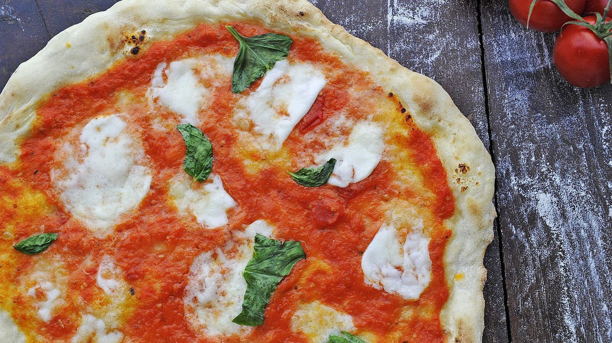

DEN BESTE PIZZAEN
Oppskrift
| Pizza Oppskrift | Hvetemel | Sukker | Salt | Lunket vann | Olivenolje | Pakke gjær |
|---|---|---|---|---|---|---|
| 1 pizza | 1 kg | 3 ts | 4 ts | 6 dl | 4 ss | 0,5 |
| 2 pizzaer | 2 kg | 6 ts | 8 ts | 12 dl | 8 ss | 1 |
| 3 pizzaer | 3 kg | 9 ts | 12 ts | 18 dl | 12 ss | 1,5 |
Saus
- 2 bokser hermetiske tomater
- 2 fedd hvitløk
- 3ts oregano
- 3 ts sukker
- 3 ts salt
- 5 ss olivenolje
- Mozzarella
- Basilikum
Slik gjør du:
- Sett opp kjøkkenmaskin med eltekrok og løs opp gjæret i lunket vann.
- Ha alt det tørre i bakebollen og spre gjærvannet under omrøring.
- La maskinen kjøre langsomt i 15 minutter til alt melet er arbeidet inn og deigen er glatt og elastisk, og ganske bløt.
- La deigen hvile på et bord i 10 minutter, og del den i 8 leiver.
- Elt leivene og lag runde boller. Plasser dem på et smurt brett og la heve i 2 timer.
- Bland alle ingrediense til sausen i en bolle og kjør sammen med en stavmixer og smak til med salt og pepper.
- Sett pizzasteinen i bunnen av ovnen og sett sett ovnen på fult.
- La pizzasteinen på 30 minutter i ovnen etter at den er blitt varm før du begynner steke pizzaene.
- Arbeid deigen ut på et godt melet bakebord. Ikke press den for flat, prøv å strekke den mer ut mer enn å presse. Det gjør ikke noe om den ikke blir rund.
- Ta pizzasteinen ut av ovnen og strø litt mel på. Legg deigen over på den. Bre pizzasaus utover deigen. Ikke bruk for mye, den skal ikke drukne.
- Bryt opp biter mozzarella og fordel utover. Stek til bunnen er gjennomstekt og slipper steinen når du drar litt i den.
- Den skal helst få noen svarte prikker, men det er ikke sikkert ovnen er varm nok, så gi deg før osten blir brun. Strø over basilikumblader til slutt.